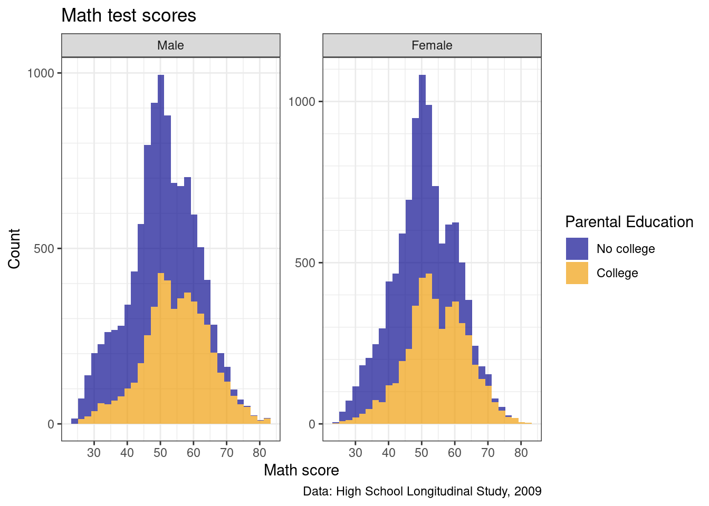
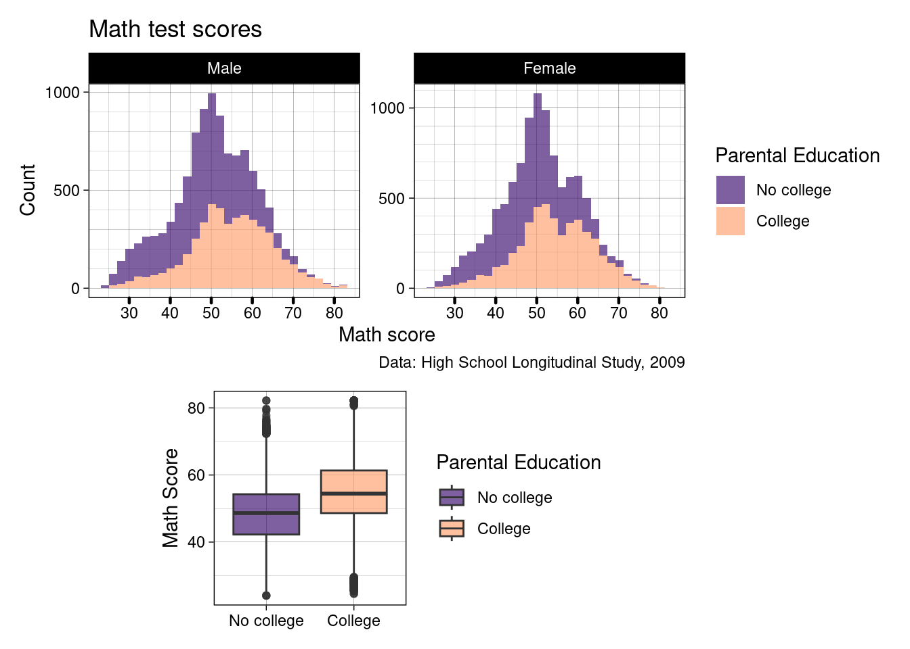
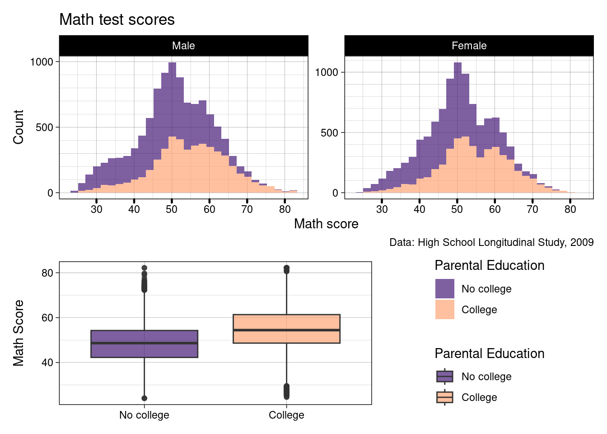

## ---------------------------
##' [Libraries]
## ---------------------------
library(tidyverse)
library(patchwork)II: Customization
Well-constructed figures can make a huge difference in how your work is received
First, they look nice!
But more importantly, a well-constructed figure, just like a well-constructed sentence, can more accurately and more succinctly convey key information to the reader
We’ve already learned the basics of plotting in the first data visualization lesson
But, we didn’t spend much time making our figures look as nice as we could have
The sky is limit with graphics in R, but with just a little bit of extra effort, you can make very nice figures.
That’s what we’re doing in this lesson.
Libraries
- In addition to tidyverse, we’ll add a new library, patchwork, that we’ll use toward the end of the lesson.
- If you haven’t already downloaded it, be sure to install it first using
install.packages("patchwork").
- Finally, we’ll load the data file we’ll be using,
hsls_small.csv
## ---------------------------
##' [Input data]
## ---------------------------
df <- read_csv(file.path("data", "hsls-small.csv"))Initial plot with no formatting
Rather than make a variety of plots, we’ll focus on making and incrementally improving a single figure (with some slight variations along the way)
In general, we’ll be looking at math test scores via the
x1txtmscordata columnFirst, we need to clean our variable of interest
- As you may recall from an earlier lesson,
x1txmtscoris a normed variable with a mean of 50 and standard deviation of 10.- That means any negative values are missing data, which for our purposes, will be dropped
- As you may recall from an earlier lesson,
Quick Question: We didn’t have to do this last week as default behavior when plotting is simply to drop missing values, which worked fine using the
.dtaversion of this file. Why wouldn’t that work with the.csvversion of the same data?
## -----------------------------------------------------------------------------
##' [Initial plain plot]
## -----------------------------------------------------------------------------
## Drop missing values for math test score
## Note: they would be dropped by ggplot anyway, but this prevents that warning
df <- df |>
filter(x1txmtscor != -8)- First, let’s make a plain histogram with no settings
- Last week we never assigned the plot to an object, we always just had it print out
- This week, as we are going to be focusing on one plot, editing and adding to it, we are always going to assign the plot to
pand then print it out- Remember: ggplots are layered
- If we want to change the base layers, we will have to start again and overwrite
p - If we want to add more detail to
pwe can just add those layers likep + <layer>- If we want to overwrite something that is already in
p, we just specify it again- Anything we don’t say will be left as is
- If we want to overwrite something that is already in
- If we want to change the base layers, we will have to start again and overwrite
- Remember: ggplots are layered
## create histogram using ggplot
p <- ggplot(data = df) +
geom_histogram(mapping = aes(x = x1txmtscor))
## show
p
So there it is. Let’s make it better.
Titles and captions
- The easiest things to improve on a figure are the title, subtitle, axis labels, and caption
- As with a lot of ggplot2 commands, there are a few different ways to set these labels, but the most straightforward way is to use the
labs()function- This can be added as another layer to our existing plot
p
- This can be added as another layer to our existing plot
## -----------------------------------------------------------------------------
##' [Titles and captions]
## -----------------------------------------------------------------------------
## Add placeholder titles/labels/captions
p <- p +
labs(title = "Title",
subtitle = "Subtitle",
caption = "Caption",
x = "X axis label",
y = "Y axis label")
## show
p- Rather than accurately labeling the figure, I’ve repeated the arguments in strings so that it’s clearer where every piece goes
- The title is of course on top
- With the subtitle in a smaller font just below
- The x and y axis labels go with their respective axes
- The caption is right-aligned below the figure
- You don’t have to use all of these options for every figure
- If you don’t want to use one, you have a couple of options:
- If the argument would otherwise be blank (title, subtitle, and caption), you can just leave the argument out of
labs() - If the argument will be filled, as is the case on the axes (ggplot will use the variable name by default), you can use
NULL
- If the argument would otherwise be blank (title, subtitle, and caption), you can just leave the argument out of
- To make our figure nicer, we’ll add a title, axis labels, and caption describing the data source
- We don’t really need a subtitle and since there’s no default value, we’ll just leave it out
- Notice:
pright now still has the placeholderlabs()arguments, so we can just call it and overwritelabswith a new call
## ---------------------------
## titles and captions: ver 2
## ---------------------------
## create histogram using ggplot
p <- p +
labs(title = "Math test scores",
caption = "Data: High School Longitudinal Study, 2009",
x = "Math score",
y = "Count")
## show
pQuick question: What about these labels is a little silly? Try to fix it so it looks like the below

With that fixed, now we’ll move to improving the axis scales!
Axis formatting
In general, the default tick mark spacing and accompanying labels are pretty good
But sometimes we want to change them, sometimes to have fewer ticks and sometimes to have more
For this figure, we could use more ticks on the x axis to make differences in math test score clearer
While we’re at, we’ll increase the number of tick marks on the y axis too.
To change these values, we need to use
scale_< aesthetic >_< distribution >function- These may seem strange at first, but they follow a logic. Specifically:
< aesthetic >: x, y, fill, colour, etc (what is being changed?)< distribution >: is the underlying variable continuous, discrete, or do you want to make a manual change?
- These may seem strange at first, but they follow a logic. Specifically:
To change our x and y tick marks we will use:
scale_x_continuous()scale_y_continuous()- We use
xandybecause those are the aesthetics being adjusted - we use
continuousin both cases becausemath_teston the x axis and the histogramcountson the y axis are both continuous variables
- We use
- There are a LOT of options within these
scale_functions - They depend on what kind of aesthetic you’re adjusting
- For now we will focus on using two
breaks: where the major lines are going (they get numbers on the axis)minor_breaks: where the minor lines are going (they don’t get numbers on the axis)
- For now we will focus on using two
- Both
breaksandminor_breakstake a vector of numbers - We can put each number in manually using
c()(e.g.,c(0, 10, 20, 30, 40)), but a better way is to use R’sseq()function:seq(start, end, by)
- Notice that within each
scale_*()function, we use the samestartandstopvalues for bothminorandmajorbreaks, just change thebyoption- This will give us axis numbers at spaced intervals with thinner, unnumbered lines between.
## -----------------------------------------------------------------------------
##' [Axis formatting]
## -----------------------------------------------------------------------------
## create histogram using ggplot
p <- p +
scale_x_continuous(breaks = seq(from = 0, to = 100, by = 5),
minor_breaks = seq(from = 0, to = 100, by = 1)) +
scale_y_continuous(breaks = seq(from = 0, to = 2500, by = 100),
minor_breaks = seq(from = 0, to = 2500, by = 50))
## show
p
- We certainly have more lines now. Maybe too many on the y axis, which is a sort of low-information axis
- do we need really that much detail for histogram counts?
- Let’s keep what we have for the x axis and increase the
byvalues of the y axis
## ---------------------------
## axis formatting: ver 2
## ---------------------------
p <- p +
scale_y_continuous(breaks = seq(from = 0, to = 2500, by = 500),
minor_breaks = seq(from = 0, to = 2500, by = 100))- That seems like a better balance. We’ll stick with that and move on to legend labels
Legend labels
- Let’s make our histogram a little more complex by separating math scores by parental education
- Specifically, we’ll use a binary variable that represents, did either parent attend college?
- First, we need to create a new variable,
pared_coll, from the ordinal variable,x1paredu- Also, we are going make it a
factor()so R knows the 0 and 1 don’t mean numbers, they mean cateogories- We did this last week, but this time we are going add labels too
- Specifically, we want to
levelsandlabelsarguments
- Specifically, we want to
- These pair up to make a labelled factor
levelsshould be a list of the values you have in the column- In this case just 0 and 1, so
levels = c(0,1)
- In this case just 0 and 1, so
labelsshould be a list of the labels you want to use- These should be strings (in ““)
in the same order as the levelsyou want to tie them to<> - In this case, we can say
labels = c("No college","College")to match thelevels = c(0,1)
- These should be strings (in ““)
- We did this last week, but this time we are going add labels too
- Also, we are going make it a
## -----------------------------------------------------------------------------
##' [Legend labels]
## -----------------------------------------------------------------------------
## add indicator that == 1 if either parent has any college
df <- df |>
mutate(pared_coll = ifelse(x1paredu >= 3, 1, 0),
pared_coll = factor(pared_coll,
levels = c(0,1),
labels = c("No college", "College")))- Now we’ll make our same histogram, but add the
fillaesthetic- Note: since we are changing our underlying plot data, it’s best to start again and store the plot in
p2
- Note: since we are changing our underlying plot data, it’s best to start again and store the plot in
Quick question: I also added one other new line, who can remember what
alpha = 0.66does?
p2 <- ggplot(data = df) +
geom_histogram(mapping = aes(x = x1txmtscor,
fill = factor(pared_coll)),
alpha = 0.66) +
## Below here is just what we had added to p in previous steps
labs(title = "Math test scores",
caption = "Data: High School Longitudinal Study, 2009",
x = "Math score",
y = "Count") +
scale_x_continuous(breaks = seq(from = 0, to = 100, by = 5),
minor_breaks = seq(from = 0, to = 100, by = 1)) +
scale_y_continuous(breaks = seq(from = 0, to = 2500, by = 500),
minor_breaks = seq(from = 0, to = 2500, by = 100))
## show
p2- Close! But, factor(pared_coll) isn’t the best name for our legend…
Quick question: try adding something that will fix this issue and make it look like below
- Personally, this graph still looks a little ugly
- I (and a lot of people) are red-green colorblind
- R chooses shades that aren’t too bad for this, but it’s still not great
- When we changed the color of a plot last week, it was purely decorative, so it went inside the
geom_function - This time, we want to change the colors associated with as
aes()element, so, we are changing ascale_- Specifically
scale_filland we are going to choose manual colors, soscale_fill_manual()- This takes
values = c(<list of colors the same length as factor>)- In this case our fill variable has two levels, so we need two colors
- For school spirit, let’s pick a shade of orange and blue
- Tip: You can add 1,2,3, or 4 next to a color in R to make it darker
- For school spirit, let’s pick a shade of orange and blue
- In this case our fill variable has two levels, so we need two colors
- This takes
- Specifically
- I (and a lot of people) are red-green colorblind
## ---------------------------
## legend labels: ver 3
## ---------------------------
## create histogram using ggplot
p2 <- p2 +
scale_fill_manual(values = c("blue4", "orange2"))
## show
p2Much better!
facet_wrap()
- Now, what if we want to see how this trend varies by region?
- Remember from last week, we can use
facet_wrap()to split data and make separate plots for each level of a variablefacet_wrap()uses a~tilde to mean “facet by this variable”
## Add a facet wrap for region
p2 <- p2 +
facet_wrap(~x1sex)
## show
p2- Okay, not a bunch of difference between sexes here, but this is interesting
Quick question: without going back and changing the data (i.e., within the
facet_wrapcommand, turn thex1sexvariable into a factor with labels of the correct names)
From the Codebook: 1 is Male, 2 is Female
- Okay, really getting close, but now that scale we set earlier is cramped…
Quick task: add a new
scale_x_continuous()to overwrite the “breaks” we set earlier with a sequence from 0 to 100 by 10, like below
- Okay, I think this is starting to come together!
Themes
- Now that we have our figure mostly set up, we can adjust some of the overall appearence using
theme()arguments
Preset Themes
- There are a number of preset themes in ggplot2
- I encourgae you to play around with these for the plots in your report
- First, let’s take a look at
theme_bw()
## -----------------------------------------------------------------------------
##' [Preset themes]
## -----------------------------------------------------------------------------
## create histogram using ggplot
p2 <- p2 +
theme_bw()
## show
p2
- How about
theme_linedraw()?
p2 <- p2 +
theme_linedraw()
## show
p2- Yes, I think that looks pretty smart now!
Editing Specific Theme Elements
- This is where you can really dive into the depths of customization
- Unlike some proprietary analysis software cough, if you want to change something, you can (with some patience for tinkering around in the theme options)
- We don’t have time to do much of this here, but for demonstration’s sake, let’s change one wildly specific thing
- Let’s tinker with the x axis ticks
- Make them a little thicker to 0.8 units
- ggplot units are how you resize most things in ggplot, easiest way to pick a number is to test a value and adjust from there
- Make them round-ended pill shapes
- Make them a little thicker to 0.8 units
- Let’s tinker with the x axis ticks
p2 <- p2 +
theme(axis.ticks.x = element_line(linewidth = 0.8,
lineend = "round"))
## show
p2- Editing theme elements is always the same, you need to play around to learn this on your own, but the general gist is
- Add a
theme()argument
- Always below any preset themes, as those will overwrite anything you set
- Inside
theme()there are many many options which you can see listed here - Pick one of more and assign to it
=anelement_ element_come in different types includingelement_line()like we used aboveelement_text(),element_rect(), and others- Each of these has specific options you can customize as you wish
- As I say, there is a world of possibilities in customization, depending on how much time you want to dedicate!
Multiple plots with patchwork
In this final section, we’ll practice putting multiple figures together
All the plots we’ve made so far have been one single ggplot object, but, we can put more than one together if we want
We use the patchwork library!
We technically have our original
pplot saved, but we’ve made such progress since then, let’s whip up a nicer second plot and assign it top3I’ve included a couple of new things here, but it should be mostly familiar
scale_fill_viridis_d()sets color-blind friendly palettes, which can be great when you have a categorical variable but- Gradient color sets (greyscale, shades of red, etc.) are pretty color-blind friendly, as without any color, they all will look like greyscale
- This is also just useful for printing in black and white!
- Typically though, gradient colors imply increasing/decreasing values of a continuous variable (e.g., darker red means more GOP on election maps)
- The viridis palettes in R have been designed to look like discrete color scales, i.e., they don’t look just like one color getting darker to most readers
- But they also use shading/darkness/lightness of the colors, which means if printed in black and white, or read by someone who can’t see colors, they still look different
- For this reason, I try to use these for categorical variables in reports, unless I get carried away with school spirit (that’s hint for the homework)!
- Gradient color sets (greyscale, shades of red, etc.) are pretty color-blind friendly, as without any color, they all will look like greyscale
beginandendjust allow you to trim the more extreme ends of the color palette off - This is useful in situations like this when you only have two cateogories and don’t want them to look totally black and white
## -----------------------------------------------------------------------------
##' [Multiple plots with patchwork]
## -----------------------------------------------------------------------------
## Make a nice looking second plot of math scores by by parental education
df <- df |>
mutate(x1region = factor(x1region,
levels = c(1,2,3,4),
labels = c("Northeast", "Midwest", "South", "West")))
p3 <- ggplot(df) +
geom_boxplot(mapping = aes(x = pared_coll,
y = x1txmtscor,
fill = pared_coll),
alpha = 0.66) +
scale_fill_viridis_d(option = "magma", begin = 0.2, end = 0.8) +
labs(x = NULL,
y = "Math Score",
fill = "Parental Education") +
theme_linedraw()
## show
p3- Now that we have our new figure, let’s paste it side by side (left-right) with our first figure
- Once we’ve loaded the patchwork library (like we already did at the top of the script), we can use a
+sign between out two ggplot objectsp2 + p3
## ---------------------------
## patchwork: side by side
## ---------------------------
## use plus sign for side by side
p2 + p3- This is super squished, and even if we zoom in it’s not great…
- Let’s try on top of each other instead
- In patchwork, this is
/rather than+
- In patchwork, this is
- Let’s try on top of each other instead
p2 / p3- Cool! But there’s still a few things I don’t like…
- The orange and blue clashes against the viridis colors
- So let’s edit
p2to also use the magma viridis scale too
- So let’s edit
- The orange and blue clashes against the viridis colors
p2 <- p2 +
scale_fill_viridis_d(option = "magma", begin = 0.2, end = 0.8)
p2 / p3- That’s definitely better! If I’m getting picky, the boxplot is a little stretched though, as it’s trying to fill the length of two histograms
- If you want to specify a layout, you can do it using
plot_layout()which takes a string of letters and #s- A, B, C, etc. refer to the plots in the order you add them to the patchwork
- # Can be used to add space
- So let’s create a design the histograms on top take up 5 spaces, and the boxplot takes up 3, with a spacer on either side
- If you want to specify a layout, you can do it using
p2 / p3 + plot_layout(design = "AAAAA
#BBB#")
- Pretty good, but when can do even better…
- We can add a
guide_area()for all legend keys to go - We then need to add that as C in our patchwork design
- Then inside
plot_layout()specifyguides = "collect"which will try and put all the legends in one place- If our legends matched exactly, it would only keep one, but as the boxplot lines are part of the legend, they technically cannot be collapsed
- If you really wanted, removing the lines from the boxplot legend would definitely by possible, but for the sake of the class, we will accept what we have!
- If our legends matched exactly, it would only keep one, but as the boxplot lines are part of the legend, they technically cannot be collapsed
- We can add a
p2 / p3 + guide_area() + plot_layout(design = "AAAAA
BBBCC",
guides= "collect")
- Getting somewhere now… But the caption we added to
p2is getting in the way, the title isn’t that great, and maybe some subtitles for each plot would be useful
Quick excercise: Remove the title and caption labels from p2, add subtitles to p2 and p3, then replot the patchwork
- Okay, now finally, we can add some overall labess to our patchwork with
plot_annotation()- These work very similarly to the ggplot
labs()
- These work very similarly to the ggplot
- There we go, now the title better reflects our patchwork, and the caption sits below both plots as it should
- Generally, our plot shows there’s not a bunch of difference in math scores by sex or region,
Summary
- There is infinitely more customization you can do with both
ggplot2andpatchwork, but this lesson has touched on a good amount of the basics! - We can always do more, of course, but remember that a figure doesn’t need to be complicated to be good
- In fact, simpler is often better
- The main thing is that it is clean and clear and tells the story you want the reader to hear
- What exactly that looks like is up to you and your project!
ggplot2 Challenge!
- This week, your assignment is to use the
ggplot2-challenge-data.csv(download above) to recreate the below plot - To successfully complete the assignment, write ggplot2 code that creates a plot that closely resembles the below plot
- For the full 5 points, the information portrayed needs to be identical with reasonably similar aesthetics
- If you want to go the extra mile, there is a coveted ggplot2 magnet prize for the student who most closely copies the plot
- You’re still welcome to work together, but, I only have 2 magnets… So any ties beyond that will have a slight delay in receiving their prize…
Hint: the data is already cleaned, but, there are still a couple of data wrangling tasks you’ll need to do before you can make the plot
Once complete, turn in the .R script (no data etc.) to Canvas by the due date (Sunday 11:59pm following the lesson). Assignments will be graded on the following Monday (time permitting) in line with the grading policy outlined in the syllabus.